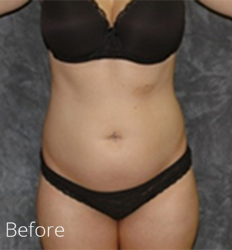
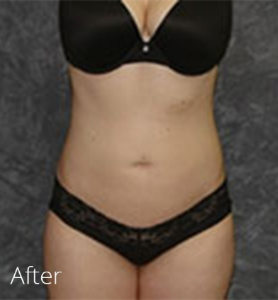

GALLERY
Many patients who have undergone procedures will not be displayed on this website. A complete gallery of pre-operative and post-operative photographs will be shown to you during your consultation with Dr. Lohner. This section features before and after pictures for a variety of procedures.


Results speak for
themselves.

SCHEDULE A
CONSULTATION
our practice
Patient Information
We’re here to help, with a number of patient resources designed to make your experience as comfortable as possible. Read through the materials below, and don’t hesitate to reach out and set up your consultation to learn more about what we can do for you.